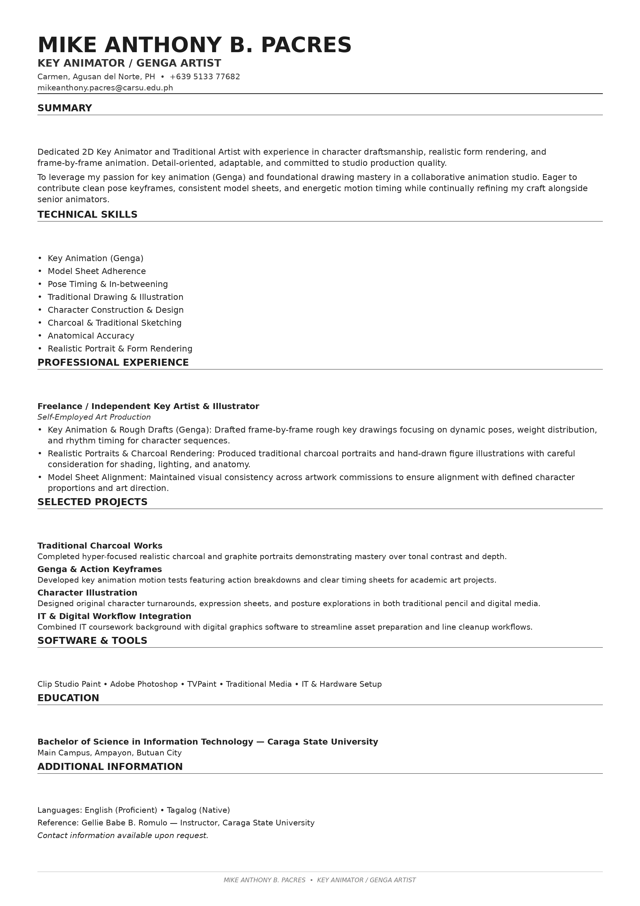
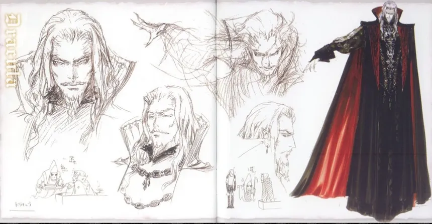
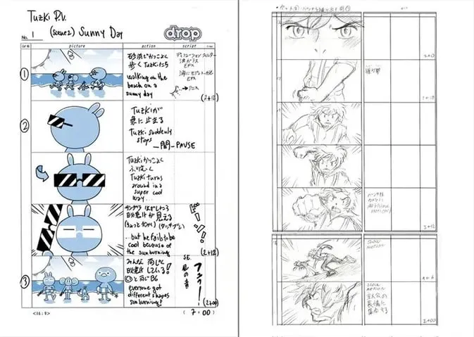
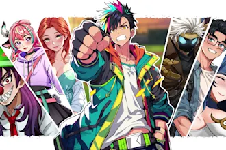
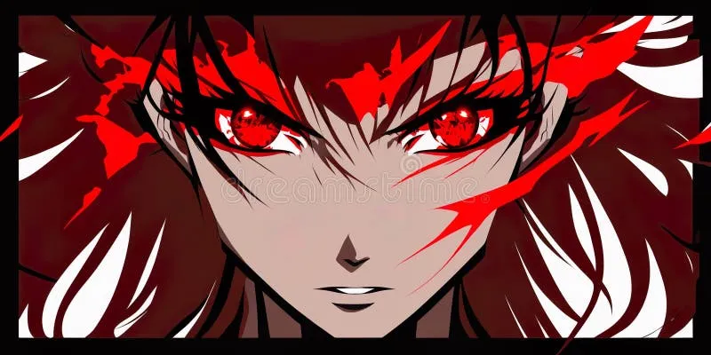
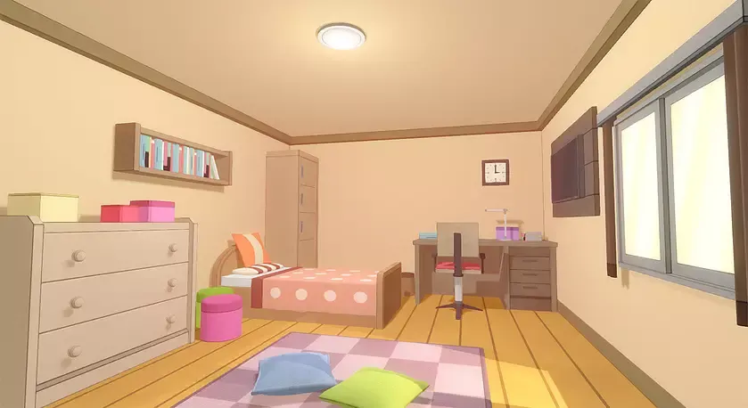
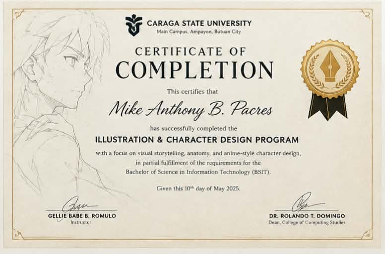
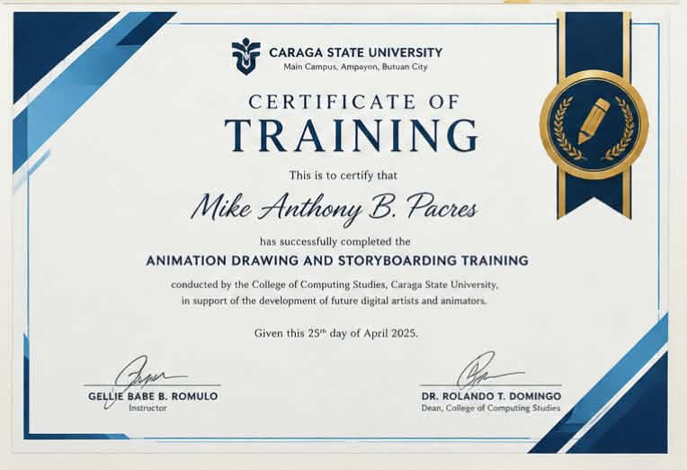

Artwork Preview
Animator, Illustrator & Information Technology Graduate Caraga State University (CSU) · Bachelor of Science in Information Technology
A versatile BSIT graduate bridging technical software capabilities with high-caliber 2D/3D animation, visual storytelling, and motion graphics. Trained under the academic rigor of Caraga State University, equipped with NACE workplace competencies and aligned with UP CAP employer expectations. Adept at agile collaboration, digital pipeline optimization, and creative user interface design.
Aligned with the National Association of Colleges and Employers (NACE) Career Readiness Framework and Philippine IT Industry Standards.
Creative problem solving & asset optimization
2D/3D Animation, UI & Software Integration
Visual storytelling & storyboard pitch
RA 10173 Ethics & Deadline Reliability
Adaptive learning in IT & Creative Tech
Formatted to standard A4 dimensions. Click on the image frame to view full screen or toggle the accessible plain text version below.

Animator & Digital Illustrator | BSIT Graduate
Caraga State University, Philippines | Specialized in IT Media Pipelines
Bachelor of Science in Information Technology (BSIT)
Focus: Digital Media Engineering, 2D/3D Asset Pipelines, Mobile UI/UX Design.
Software: Blender, Adobe Animate, Photoshop, Illustrator, After Effects, Clip Studio Paint, Figma.
Development & Tools: HTML5, CSS3, JavaScript, Git, Agile Methodology, Digital Asset Management.
Curated selection of 2D/3D animation assets, storyboards, character concepts, and interactive media designed during BSIT coursework and external creative projects.

Turnaround sheets and keyframe walk-cycle animation rigs created for an indie digital storytelling project.

Structured visual storyboard mapping audio cues, transition effects, and vector graphic movements for educational modules.

Optimized sprite atlases and 2D tilemap textures engineered for seamless integration into web game engines.

High-resolution vector artwork and editorial digital paintings designed for institutional publications.

Low-polygon 3D prop models rendered with light maps alongside interactive UI state animations.
Structured breakdown demonstrating problem solving, IT collaboration, and quantifiable outcomes in creative production.
Academic certifications and technical training credentials. All documents are displayed with redacted personal sensitive data in accordance with Philippine Data Privacy Regulations (RA 10173).

Caraga State University (CSU)
Official graduation credential certifying completion of Bachelor of Science in Information Technology curriculum.

Creative Technology Institute
Specialized training in frame-by-frame animation, digital illustration workflows, and motion vector graphics.
IT Industry Skills Accreditation
Certification in responsive UI asset design, user journey mapping, and mobile graphics performance optimization.
"Mike Anthony Pacres demonstrates an exceptional blend of technical IT knowledge and creative illustration talent. During his BSIT studies at Caraga State University, his dedication to optimizing asset pipelines and delivering animation projects on schedule was outstanding."
"Mike's ability to interpret storyboard requirements and translate them into polished 2D animations and motion graphics made him an invaluable asset during our collaborative media initiatives."
Philippine Data Privacy Act of 2012
This e-portfolio strictly adheres to Republic Act No. 10173 (Data Privacy Act of 2012) and UP CAP Employer Standards.